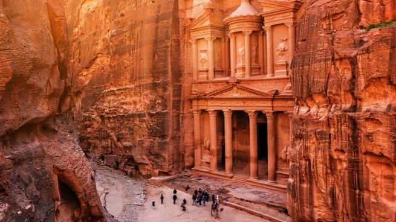
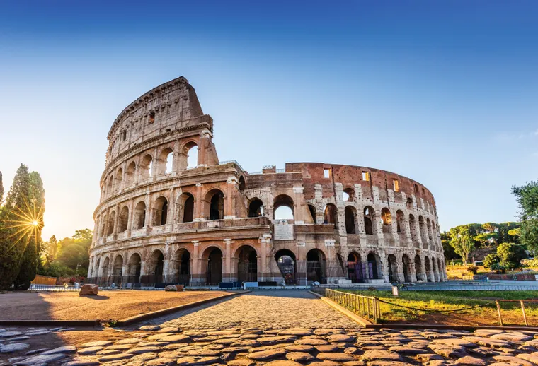

1° La gran murralla china
Fue construida alrededor del año 220 a.C. por el primer emperador Qin Shin Huang, quien ordenó reunir los tramos de fortificaciones construidas anteriormente, a fin de crear un sistema de defensa contra las invasiones de los pueblos del Norte

2° Chichen itzá, Mexico
ciudad maya de la península de Yucatán (México) que floreció en los siglos IX y X. De acuerdo con Unesco, esta ciudad sagrada fue uno de los centros más importantes de la civilización maya.

3° Petra, Jordania
Fundada alrededor del 300 a. C., era la capital del Reino Nabateo. Se puede acceder a través de un estrecho cañón llamado Al Siq y contiene tumbas y templos tallados en acantilados de arenisca de color rosa, motivo por el que se la conoce como la "Ciudad Rosa".
4°Machu Picchu, Perú
Ubicado a 2430 metros de altura en medio de un bosque tropical de montaña, el santuario es considerado una de las realizaciones arquitectónicas más imponentes del Imperio Inca.

5° Cristo Redentor, Brasil
el monumento está hecho de hormigón armado y mide 30 metros de altura sin incluir su base, que mide unos 8 metros, y sus brazos extendidos miden 28 metros. Es la escultura Art Déco más grande del mundo.

6° Coliseo romano, Italia
El anfiteatro mide 189 por 156 metros y cuenta con un complejo sistema de bóvedas. En su apogeo, la estructura tenía capacidad para 50 000 espectadores que podían apreciar luchas de gladiadores y combates entre hombres y animales.
7° Taj Mahal, India
Se trata de un imponente mausoleo de mármol blanco edificado entre los años 1631 y 1648 por orden del emperador mogol Shah Jahan para perpetuar la memoria de su esposa favorita, explica la Unesco.